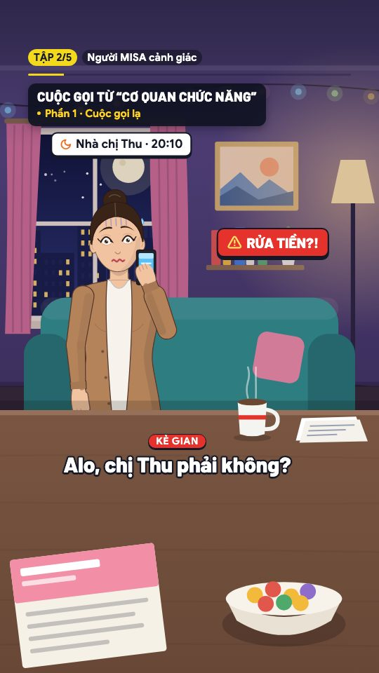
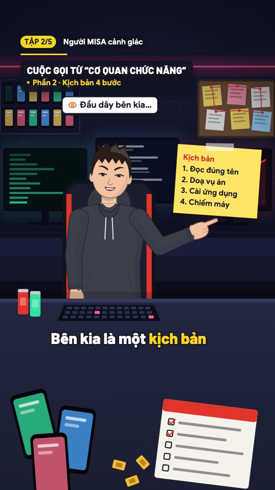
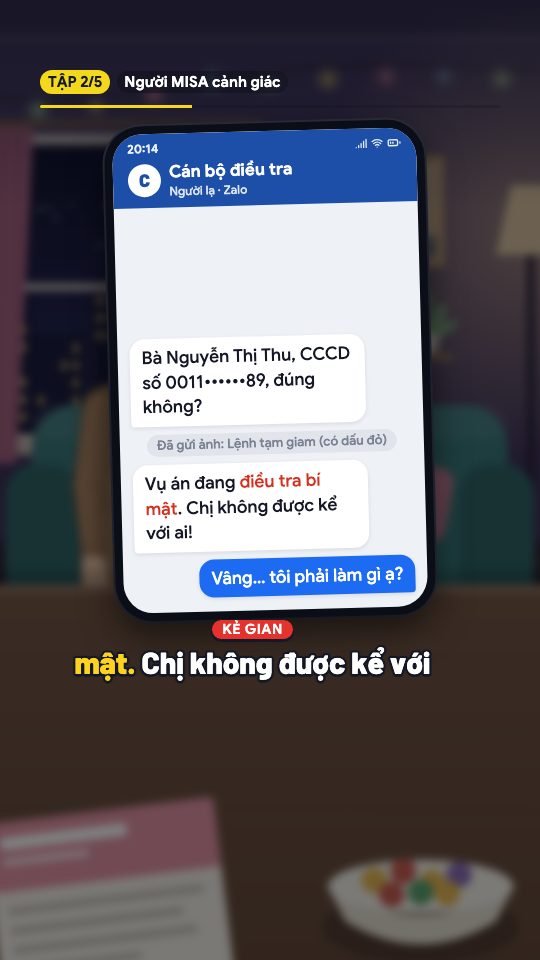
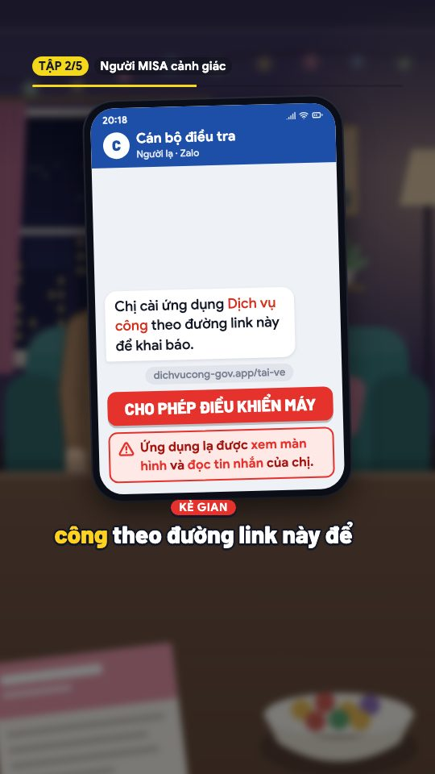
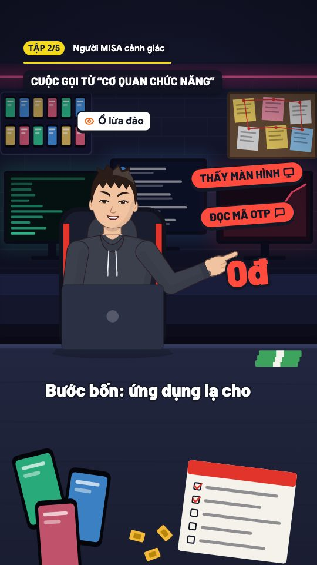
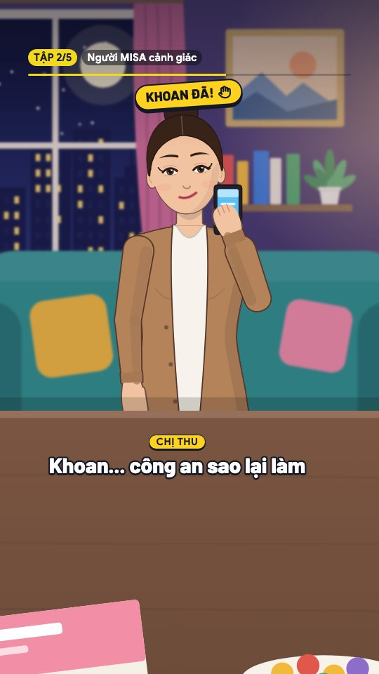
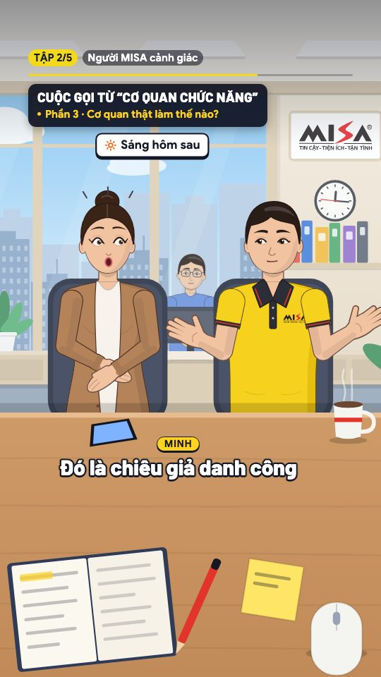
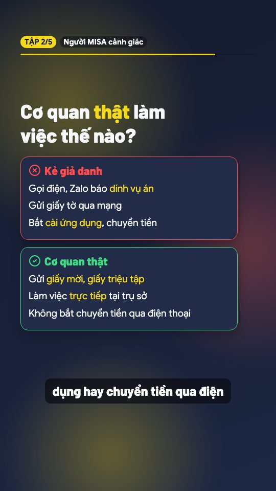
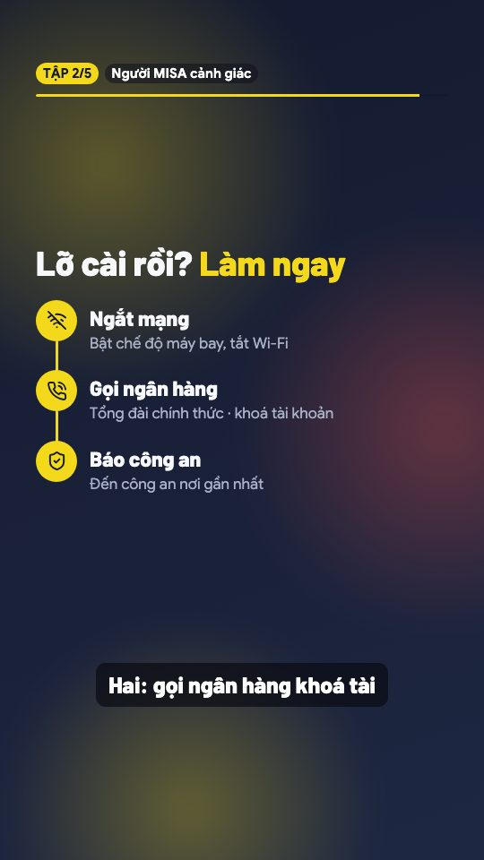
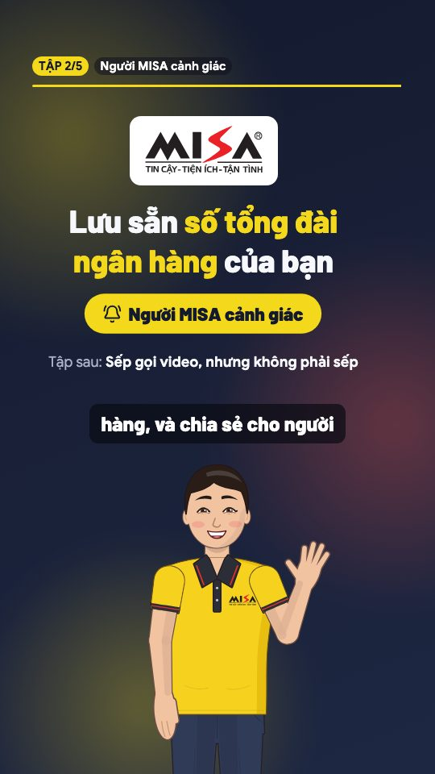

1story7.8s
Alo, chị Thu phải không? Tôi gọi từ công an quận.
Chị có liên quan đến một đường dây rửa tiền.
Hả? Tôi có làm gì đâu ạ!
♪ whoosh-soft · pop · error · whoosh

Alo, chị Thu phải không? Tôi gọi từ công an quận.
Chị có liên quan đến một đường dây rửa tiền.
Hả? Tôi có làm gì đâu ạ!
♪ whoosh-soft · pop · error · whoosh

Bên kia là một kịch bản bốn bước soạn sẵn.
Đọc đúng tên, số căn cước cho nó tin đã.
♪ whoosh-soft · pop-soft · whoosh

Bước một, hai: đọc đúng thông tin, gửi giấy tờ giả.
Vụ án đang điều tra bí mật. Chị không được kể với ai!
Vâng... tôi phải làm gì ạ?
♪ whoosh · swoosh-up · bubble · tick · send

Chị cài ứng dụng Dịch vụ công theo đường link này để khai báo.
Bước ba: bắt cài ứng dụng giả, rồi xin bật mọi quyền.
♪ swoosh-up · bubble · tick · click · error · whoosh

Bước bốn: ứng dụng lạ cho kẻ gian xem màn hình, đọc cả mã OTP.
Có quyền rồi. Rút tiền thôi!
♪ whoosh · whoosh-soft · pop · impact

Khoan... công an sao lại làm việc qua điện thoại?
Để chị hỏi Minh đã.
♪ whoosh · pop

May mà chị chưa cài! Đó là chiêu giả danh công an.
Họ còn giả cả thuế, bảo hiểm xã hội đấy.
♪ whoosh-soft · whoosh

Cơ quan thật mời bạn bằng giấy mời, giấy triệu tập, làm việc trực tiếp.
Không ai bắt bạn cài ứng dụng hay chuyển tiền qua điện thoại.
♪ whoosh · tick

Lỡ cài rồi? Một: ngắt mạng ngay.
Hai: gọi ngân hàng khoá tài khoản.
Ba: báo công an nơi gần nhất.
♪ pop · whoosh · pop-soft

Lưu sẵn số tổng đài ngân hàng, và chia sẻ cho người thân nhé!
♪ pop-soft · chime
👤 minh · chao